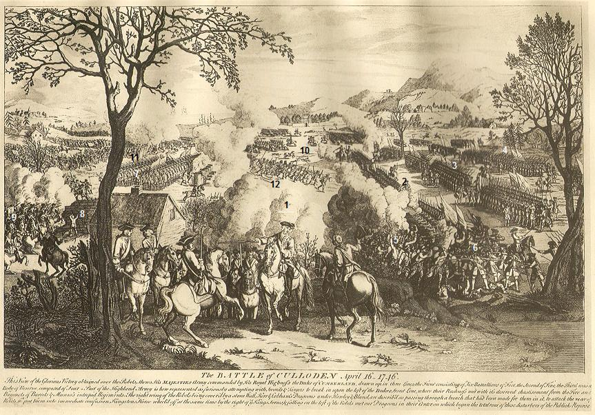

Òran eile air Latha Chùilodair
Culloden Day - Second Song
Text by ( John Roy Stewart ) (1700-1752)from the collection "Gaelic Bards 1715-1765" published by the Rev. A.McLean Sinclair (Charlottetown, Canada, 1890)
English translation by John Lorne Campbell ("Highland Songs of the '45", 1932 - 1982)
Tune 1 melody sung by Alasdair Monk
Pentatonic melody, alternate beat 9/8, 4/8, 6/8
Tune 1 sung by Alasdair Monk
Recorded by John Lorne Campbell on 27th 3. 1951 at Hacklete, Benbecula
Tune 2 Scottish strathpey
Tunes sequenced by Chr. Souchon

|
The Battle of Culloden, April 16, 1746
This view of the glorious victory obtained over the rebels shows His Majesty's army commanded by His Royal Highness the Duke of Cumberland [1], drawn up in three lines: the front consisting of six battalions of foot,[2] the second of five, [3] the third was a body of reserve composed of four.[4] Part of the Highland army is here represented as furiously attempting with swords and targets to break in upon the left of the Duke's front line [5], where their rashness met with its deserved chastisement from the fire and bayonets of Barret's and Munro's intrepid regiments.[6] The right wing of the rebels [7] being covered by a stone wall [8], Kerr and Cobham's dragoons [9] under Hawley and Bland are described as passing through a breach that had been made for them in it, to attack the rear of rebels and to put them into immediate confusion. Kingston's Horse [10] wheeled off at the same time by the right of HM the King's forces and, falling on the left of the rebels, met our Dragons in their center [11], on which began the total rout [12] of these disturbers of the public repose. |
La bataille de Culloden, 16 avril 1746
Cette vue de la glorieuse victoire remportée sur les rebelles montre l'armée de Sa Majessté commandée par SAR le Duc de Cumberland [1] rangée en trois lignes: le front composé de 6 bataillons d'infanterie [2], la seconde ligne composée de 5 bataillons, [3], la troisième d'un corps de réserve composé de 4 bataillons. [4] Une partie de l'armée des Highlands est représentée lors d'une attaque furieuse avec sabre et bouclier visant à rompre l'aile gauche du front adverse [5], alors que leur témérité est châtiée comme elle le mérite par le feu et les baïonnettes des régiments intrépides de Barret et de Munro. [6] L'aile droite de l'armée rebelle [7] étant couverte par un mur de pierres [8], les dragons de Kerr et Cobham [9] s'engouffrent par une brêche pratiquée dans ledit mur, pour prendre à revers les rebelles et semer la confusion dans leurs rangs. La cavalerie de Kingston [10] opère en même temps un mouvement tournant sur la droite de l'armée de SM le Roi et, fondant sur l'aile gauche des rebelles, font la jonction avec nos dragons au centre de leur dispositif, provoquant la déroute totale de ces perturbateurs de l'ordre public. |
|
No tune is mentioned in "Sar Obair nam Bard" and the other old collections of Gaelic texts, but in John Lorne Campbell's "Highland songs of the '45" (1984 edition), there is a transcription of a melody belonging to
oral tradition in Barra and South Uist
, sung to the present poem by Alasdair Monk, Benbecula, tape-recorded on 27.3.1951. It is the version used here as a sound background.
However, the original tune could be different since the first line was repeated at the end of each verse, as stated in "Bliadh na Theàrlach" (1844) and "Sar Obair" (1865). Though it does not fit the text, in connection with Culloden a Scottish Strathpey should be mentioned, which is, according to its publisher, S. Fraser, "a march in repute with Jacobites, lamenting their fate at Culloden". Published in "The Airs and Melodies peculiar to the Highlands of Scotland and the Isles" (1874) under N°143 p 58. An Irish variant of the Tune "Inverness Gathering" also known as "Culloden Day" exactly scans the present poem. It will be found on next page . |
Dans le recueil "Sar Obair nam Bard", non plus que dans les autres anciens recueils de poésie gaélique, il n'est indiqué de mélodie. Mais John Lorne Campbel dans ses "Chants des Highlands de 1745" (1984) donne une transcription d'une version issue de la
tradition orale de Barra et de South Uist
, exécutée par Alasdair Monk (Benbecula) et enregistré le 27.3.1951. C'est celle que l'on entend en fond sonore.
Toutefois, la mélodie d'origine pourrait être différente, puisque la première ligne de chaque strophe était répétée en fin de couplet, comme on le voit dans "Bliadh na Theàrlach" (1844) et "Sar Obair" (1865). Bien que sans rapport rythmique avec le présent texte, on mentionnera ici un "Scottish Strathpey" dont S. Fraser, indique que "c'est une marche en honneur chez les Jacobites, déplorant leur sort à Culloden". Publiée dans "The Airs and Melodies peculiar to the Highlands of Scotland and the Isles" (1874) sous le N° 143 p 58. Enfin, une variante irlandaise de la mélodie "Inverness Gathering" connue aussi sous le titre de "Culloden Day" s'adapte exactement au présent poème. On la trouvera à la page suivante . |

|
Culloden Day - Second Song
1. O, in anguish I am, My heart's fallen to earth, And oft from my eyes tears are falling. 2. Every pleasure has gone, My cheeks withered with woe, In this hour I will hear no good tidings 3. Of Prince Charles my beloved Rightful heir to the crown, And he not knowing wither to turn to. 4. The true goodly royal blood Is now being cast out, While the bastard offspring arises. 5. Race of ill-favoured curs, Whose brood has well grown, They have put us in sore straits of hardship. 6. 'Twas not their valour or might Won the day on the heath, But each mishap that confounded our heroes [1] 7. There were many away Of each northern clan, Who in need's hour would never fail us. 8. A host of five silken flags [2] Which well used to fight, We lacked in the bloodthirsty combat. 9. Lord Cromarty's host And young Barrisdale, With MacKinnon's unyielding heroes. 10. Clan Gregor of the Glens, Active band of the swords, 'Twas they who'd come o'er at their calling. 11. And Clan Vurich the, brave, All of these were away, 'Tis my woe and my grief to read it. 12. Clan Donald, my beloved, Woe is me what befell, Ye charged not with the rest to the conflict.[3] 13. As we took the field The wind was driving the showers, From the air came a third of our torment. 14. The ground grew so soft, Both heather and sod, And we had not the help of the hill-slope.[4] 15. The fire of the foe Raining bullets on our heads, Spoilt the use of our swords, great the pity.[5] 16. If the tale told is true Achan was in the camp, The vile ranting treacherous rascal.[6] 17. He's the General great, Loathed and cursed by his host, Who sold honour and right by injustice. 18. Who played the turn-coat For the heavier purse, Which injured King James's heroes. 19. My whole sorrow and woe For the brave men smitten down Clan Chattan of the flags and the keen swords. 20. And Clan Finlay of' Braemar,[7] A proud, clever band, Who'd deal wounds in the onset of battle. 21. Others, alas, Who were cruelly used, The folk of the fine, valiant Fraser.[8] 22. Warriors proud, without fault, Enduring, in our camp, Were struck down at the time of the onset. 23. We lost kind Donald Donn From Dalcrombie above [9] And generous Alasdair Ruadh.[10] 24. We lost Robert the lucky [11] No coward on the field, 'Midst the clashing of swords and of bayonets. 25. There fell the fine stars, Of goodly fair form, For whom cattle we thought were no ransom. 26. But the wheel yet will turn Round from south or from north, And our foes will receive evil's wages. 27. And may Prince William be As a withered, stricken tree, Rootless, leafless, and twigless. 28. May thy tombstone be bare No wife, son, brother there, Without music, without light of candle. 29. Without joy, fortune, or luck, But dire woe on thy head, Such as fell on the children of Egypt[12] 30. And we'll yet see thy head Straightway gibbeted, While the birds of the air flock to rend it. 31. And at last we'll all be Alike young and old 'Neath the true King to whom we owe homage. Translated by John Lorne Campbell (1932) |
Òran eile air Latha Chùil Lodair
1. O gur mis’ th’air mo chràdh, Thuit mo chridhe gu làr, Is tric snighe gu m’ shàil o m’ léirsinn. 2. Dh’fhalbh gach toileachadh uam, Sheac le mulad mo ghruaidh, Us nach cluinn mi ’san uair sgeul éibhinn. 3. Mu Phrionns’ Teàrlach mo rùn, Oighre dligheach a’ chrùin, ’S è gun fhios ciod an tùbh a théid e. 4. Sàr-fhuil rìoghail nam buadh Tha ’ga dìobairt ’san uair-s’, ’S a’ chlann dìolain a suas ag éirigh. 5. Sìol nan cuilean gun bhàidh, Dh’am maith-chinnich an t-àl, Chuir iad sinn ann an càs na h-éiginn. 6. Cha b'è 'n cruadal mar laoich Thug dhaibh buaidh air an fhraoch Ach gach tubaist a dh'aom mu'r tréin-ne. [1] 7. Bha iad iomadaidh uainn De gach fine mu thuath, Fir nach tilleadh ri h-uair an fheuma. 8. Feachd chòig brataichean sròil [2] Bu mhaith chuireadh an lò Bhith ’gar dìth anns a’ chòmhdhail chreuchdaich. 9. Iarla Chrombaidh le shlògh, Agus Bàrasdal òg, 'S Mac-'Ic-Ailein le sheòid nach gèilleadh. 10. Clann-Ghriogair nan Gleann Buidheann ghiobach nan lann 'S iad a thigeadh a nall na 'n èight' iad. 11. Clann-Mhuirich nam buadh, Iadsan uile bhi bhuainn, Gur b-e m' iomadan truagh r'a leughadh. 12. A Chlann-Dhòmhnuill mo ghaoil, 'Ga 'm bu shuaithcheantas fraoch, Mo chreach uile nacb d' fhaod sibh èirigh. [3] 13. Air thus an latha dol sìos, Bha gaodh a' cathadh nan sian, As an adhar bha trian ar lèiridh. 14. Dh' fhàs an talamh cho trom, Gach fraoch, fearunn a's fonn, 'S nach bu chothrom dhuinn lom an t-slèibhe. [4] 15. Lasair theine nan Gall, Frasadh pheileir mu 'r ceann, Mhill sid eireachdas lann 's bu bheud e. [5] 16. Mas fior an dàna g'a cheann, Gu 'n robh Achan* 'sa chàmp, Dearg mheirleach nan raud 's nam breugan. [6] 17. 'S e sin an Seanalair mòr Gràin a's mallachd an t-slòigh, Reic e onoir 'sa chòir air eucoir. 18. Thionndaidh choileir 'sa chleòc, Air son an sporain bu mhò, Rinn sud dolaidh do sheoid Rìgh Seumas. 19. Mo chreach uile 's mo bhròn. Na fir ghasd' tha fo leòn, Clann-Chatain nan sròl bhi dhèis-laimh. 20. Clann-Fhionnlaidb Bràigh-Bbarr, [7] Buidheann ceannsgalach, ard, 'N uair a ghlaoidhte 'n adbhàns a' dh' éireadh. 21. Dream eile mo chreach, Fhuair an laimhseacha' goirt, Ga 'n ceann am Frisealach gasda, treubhach. [8] 22. An fhuil uaibhreach gun mheang, Bha buan, cruadalach ann, Ged chaidh 'ur bualadh an am na teugbhail. 23. Chaill sinn Dòmhnull donn, suairc', O Dhùn Chrombaidh so shuas, [9] Mar ri Alasdair Ruadh na fèile. [10] 24. Chaill sinn Raibeart an àigh, [11] 'S cha bu ghealtair e' m blàr Fear sgathaidh nan cnàmh 's nam féithean. 25. 'S ann thuit na rionnagan gasd' Bu mhath àluinn an dreach, Cha bu phàigheadh leinn mairt na'n èirig. 26. Ach thig cuibhle an fhortain mu 'n cuairt, Car bho dheas na bho thuath, 'S gheibh ar 'n eascaraid duais na h-eucoir. 27. 'S gu 'm bi Uilleam Mac Dheòrs', [11a] Mur chraoibh gun duilleach fo leòn, Gun fhreamh, gun mheangan, gun mheòirnean gèige. 28. Gu ma lom bhios do leac, Gun bheau, gun bhràthair gun mhac, Gun fhuaim clàrsaich, gun lasair cheire. 29. Gun sòlas, sonas, no seanns, Ach dòlas dona mu d' cheann, Mar bh' air ginealach Chlann na h-Eiphit. [12] 30. A's chì sinn fhathasd do cheann, Dol gun athadh ri crann, 'S eoin an adhair gu teann ga reubadh. 31. 'S bi'dh sinn uile fa-dheòidh, Araon sean agus òg, Fo 'n rìgh dhttgheach 'ga 'n còir duinn gèilleadh. |
La Journée de Culloden - Deuxième chant
1. Oh, combien j'ai de peine! Comme mon âme est pleine De chagrin et ploie sous le poids de son tourment! 2. Adieu, mon allégresse! Je suis plein de tristesse Car je vois s'évanouir tout espoir à présent 3. Que Charles nous revienne. La couronne est la sienne, Pourtant, où peut-il bien cacher son dénuement? 4. Fils du roi légitime, Que ton sort est indigne! A l'engeance d'un vil bâtard devoir céder! 5. Ce Chien de piètre allure, Dont la progéniture, Nous a traités avec la pire cruauté. 6. Sa honteuse victoire Qu'il n'en tire point gloire: En effet, ce jour-là le sort nous a trahis.[1] 7. Manquait à nos cohortes Pour nous prêter main-forte, Tant des nôtres dont nous avions toujours l'appui. 8. La soie de cinq bannières [2] Que l'on voyait si fières Flotter parmi nos rangs, ce jour-là nous manquait. 9. Cromarty et sa horde; Barisdale, le jeune homme, Ceux de McKinnon qui ne reculent jamais. 10. McGregor du Glengyle Qui d'estoc et de taille En hurlant leur slogan manient l'épée si bien. 11. Ceux de Cluny le brave! Irréparable entrave! Comme j'ai regretté de les savoir si loin! 12. Clan Donald, vous que j'aime Entre tous, quelle peine Qu'avec nous, vous n'ayez chargé, à l'unisson! [3] 13. La pluie que la bourrasque Plaque sur nos yeux masque Notre vue, lorsque nous prenons nos positions; 14. L'eau que le sol ingère, Le gazon, la fougère, La pente à remonter, tout nous était contre nous. [4] 15. L'étranger nous mitraille Avant que l'on ferraille Faisant de nos épées d'inutiles joujoux! [5] 16. A ce que l'on raconte, Un Acan, - quelle honte!- Oui, un vil traître avait pris place dans nos rangs. [6] 17. Le général suprême - Honni de ceux qu'il mène - Troqua l'honneur, le droit, pour quelque vil argent. 18. Il a tourné sa veste Pour l'argent et le reste. Roi Jacques, tes héros, il en fit bon marché! 19. Oh, comme je regrette La cruelle défaite Du Clan Chattan, de ses fanions, de ses épées! 20. Des Finlay de Braemar [7] Au superbe étendard Qui portaient leurs coups dès le début du combat. 21. Je pleure plus encor En pensant à ces morts: Ces vaillants Fraser qui servaient sous Lord Lovat. [8] 22. Sans peur et sans reproche, Des alliés féroces. Ils tombèrent à peine la lutte engagée! 23. Et Donald Donn aussi Le chef de Dalcrombie, [9] Et Alasdair le Roux, le fier McGillevray. [10] 24. Et Robert le Chanceux, [11] Un guerrier valeureux, Quand des fers se croisant montait le cliquetis. 25. Ce soir-là s'éteignaient Des astres qui brillaient De mille feux, dont tous nous étions éblouis. 26. Pourvu que la roue tourne Que les traitres enfournent Leur châtiment, venu du nord ou du midi! 27. Que le Prince Guillaume, Dont le père a le trône, Devienne comme l'arbre, desséché sur pied. 28. Sur ton tombeau de pierre Ni femme, fils ou frère, Ni musique, ni cierges pour t'ensevelir! 29. Point de joie pour l'infâme!! Le malheur le réclame! Plaies d'Egypte veuillez sa race anéantir! [12] 30. Puissé-je voir un jour, Suspendue haut et court, Sa tête picorée par les oiseaux voraces! 31. Lorsque tous ses sujets, Viendront pour acclamer, Leur vrai Roi qui sitôt aura repris sa place. (Trad. Ch. Souchon(c)2009) |
|
(*)
"John Lorne Campbell
(1906 - 1996) was a Scottish historian and folklore scholar. In 1935 he married the American musician Margaret Fay Shaw. In 1938 the couple acquired the island of Canna, south of Skye, and went to live there in Canna House. In 1981 Campbell gave Canna to the National Trust for Scotland, but he continued to live on the island, and his widow remained at Canna House until her death in 2004 at the age of 101. Together the couple assembled an important archive of Scottish Gaelic song and poetry, including manuscripts, sound recordings, photographs and film. Campbell's three-volume collection of Hebridean folk songs, published between 1969 and 1981, is regarded as a valuable source by musicians and folklorists. The Campbell archive at Canna House is now in the possession of the Hebridean Trust, which, in partnership with the National Trust for Scotland, plans to make the archive available to visitors to Canna."
Source: Wikipedia. Astonishingly this article does not mention his "Highland Songs of the '45", published in 1933, reprinted with revisions in 1984 and reprinted in 1997. |
(*)
"John Lorne Campbell
(1906 - 1996) était un historien et folkloriste écossais. En 1935 il épousa une musicienne américaine, Margaret Fay Shaw. En 1938 le couple acheta l'île de Canna au sud de Skye et s'installa dans sa propriété de Canna House. En 1981 Campbell fit don de Canna au National Trust for Scotland mais continua à habiter sur l'île où son épouse demeura jusqu'à sa mort en 2004, à l'âge de 101 ans. A eux deux, ils ont réuni un important corpus de poésies et de chants gaéliques écossais où l'on trouve des manuscrits, des bandes sonores, des photos et des films. La collection Campbell en trois volumes de chants populaires des Hébrides, publiée entre 1969 et 1981 est considérée par les musiciens et les folkloristes comme une inestimable source d'information. Le fonds d'archives Campbell de Canna House est désormais la propriété de l'Hebridean Trust, lequel en association avec le National Trust for Scotland envisage de le rendre consultable par les visiteurs de Canna."
Source Wikipédia. Curieusement, cet article ne parle pas des "Chants des Highlands de 1745", publiés en 1933, réimprimé et révisé en 1984 et réimprimé en 1997. |
|
The following notes
are copied from John Lorne Campbell's book.
[1] See the preceding poem for an account of the Jacobite army's misfortunes. [2] The clans enumerated in the following verses: - The McKenzies (under Lord Cromarty), - some of the McDonalds of Clanranald (under young Barisdale), - the McKinnons, -and the McGregors of Glengyle, under their respective chieftains, were absent in Sutherland at the time of the battle, where they had been sent under Lord Cromarty to recover the treasure (£12,000) which Lord Reay had captured after the wreck of the "Hazard". - The McPhersons, under Cluny, were in Badenoch, and did not arrive in time for the battle. Lord Cromarty and other leaders of the expedition to Sutherland were surprised and captured at Dunrobin Castle by the followers of Lord Reay while bidding farewell to Lady Sutherland, after they had received the Prince's order to return to Inverness. [3] The McDonald were placed on the left at Culloden, instead of on the right, the position they had traditionally occupied since Bannockburn, in consequence of which they took offence and refused to join in the charge. [In the 1984 edition, JLC corrects this note as follows:] It is not the case that the McDonalds refused to charge at Culloden, although they were offended by being placed on the left instead on their traditional place on the right. According to an account of the battle believed to be by Lord George Murray, "the right wing [of the Jacobite army] advanced first as the whole line did, much as the same time. The left wing did not attack the enemy, at least did not go sword in hand, imagining they would be flanked by a regiment of foot and some horse which the enemy brought up at that time from their second line or 'corps de réserve'". ( "The Lyon in Mourning" , i 262) [4] The position chosen by the Jacobite leaders at Culloden strikes the observer as being far from the most suitable one...It was probably taken with a view to preventing Cumberland slipping past and taking Inverness. [5] Before the battle the Highlanders were subjected to a galling fire from the enemy's cannon which caused casualties. [6] Cf. Joshua vii. 16. The reference is to Lord George Murray. There is in fact no foundation for the charge of bribe-taking. Achan took 'two hundred shekels of silver and a wedge of gold of fifty shekels weight' from the spoils of Jericho after Joshua had cursed the city. In consequence of this, the Israelites were defeated by the men of Ai. Achan's guilt was discovered by the casting of lots, and he and his family and his cattle were stoned to death in the Valley of Achor. [7] The Farquharsons. [8] The Frasers were in the part of the army pursued to Inverness, and were nearly annihilated. Most of the clan, however, under the Master of Lovat did not arrive in time for the battle. [9] McGillevray of Dalcrombie. Professor Watson [the author of "Bardachd Ghàidhlig, Specimen of Gaelic poetry 1550-1900"] says that no place called Dùn Chrombaidh is known to him. [10] Alexander McGillevray of Drumnaglass, who led the McKintoshes... raised by Lady McKintosh while her husband was in England. [11] Captain Robert McGillevray. [12] The duke of Cumberland died unmarried in 1765, all his brothers having predeceased him. His military career subsequent to Culloden was very unpopular (see also this page ) 
It is interesting to compare this translation with the one published by Charles Rogers in the 2nd volume of his "Modern Scottish Minstrel" in 1856 ( on next page ). The differences may be due to different Gaelic sources or to the text itself allowing different interpretations, especially since the stanzas are arranged in different ways. |
Les notes qui suivent
ont été recopiées de l'ouvrage de John Lorne Campbell.
[1] Cf. le poème précédent pour le récit détaillé des infortunes de l'armée jacobite. [2] Les clans énumérés dans les strophes suivantes: - les McKenzie (commandés par Lord Cromarty), - certains des McDonald de Clanranald (commandés par le jeune Barisdale), - les McKinnon, - et les McGregor de Glengyle, sous le commandement de leurs chefs respectifs, se trouvaient dans le Sutherland au moment de la bataille. Ils y avaient été envoyés avec à leur tête Lord Cromarty pour récupérer le trésor (12.000 livres) dont Lord Reay s'était emparé après le naufrage du "Hasard". - Les McPherson commandés par Cluny, étaient à Badenoch, et arrivèrent après la bataille. Lord Cromarty et les autres chefs de l'expédition en Sutherland furent surpris et faits prisonniers à Dunrobin Castle par les hommes de Lord Reay, alors qu'ils prenaient congé de Lady Sutherland pour obéir à la demande du Prince de retourner à Inverness. [3] Les McDonald avaient été placés à l'aile gauche à Culloden, et non à droite comme l'exigeait une tradition remontant à Bannockburn. Ils en prirent ombrage et refusèrent de participer à la charge. [Dans l'édition de 1984, JLC apporte à cette note la correction suivante:] Il n'est pas exact de dire que les McDonald refusèrent de charger à Culloden, même s'il est vrai qu'ils se sentaient offensés d'occuper l'aile gauche plutôt que celle qui leur était due selon la tradition. Selon un récit de la bataille qu'on pense avoir été rédigé par Lord George Murray, "l'aile droite [de l'armée Jacobite] avança d'abord à pau près en même temps que le reste de l'armée. L'aile gauche n'attaqua pas l'ennemi, ou, tout au moins, n'avança pas, sabre au clair, persuadée que son flanc allait être contourné par un régiment d'infanterie et quelques cavaliers que l'ennemi faisait monter en première ligne à ce moment, en prélevant sur sa ligne arrière ou 'corps de réserve'" ( "The Lyon in Mourning" , i 262). [4] La position choisie par les chefs Jacobites à Culloden frappe l'observateur comme n'étant pas, et de loin, la plus appropriée... Elle visait probablement à barrer le chemin à Cumberland pour l'empêcher de prendre Inverness. [5] Avant la bataille, les Highlanders avaient subi une canonnade incessante qui leur causa de nombreuses pertes. [6] Cf. Josué vii 16. Il s'agit de George Murray. Cette accusation de corruption est sans fondement. Acan avait prélevé '200 sicles d'argent et un lingot de cinquante sicles' sur le butin de Jéricho sur laquelle Josué avait appelé la malédiction divine. Ce qui valut aux Israélites d'être défaits par les hommes d'Aï. La culpabilité d'Acan fut décelée à la suite d'un tirage au sort et Acan, ainsi que sa famille et ses bêtes furent lapidés dans le val d'Acor. [7] Les Farquharson. [8] Des Fraser faisaient partie des troupes qui furent poursuivies jusqu'à Inverness et presque complètement anéanties. Le gros du clan cependant commandé par le fils cadet des Lovat arriva après la bataille. [9] McGillevray de Dalcombie. Le Prof. Watson, [l'auteur de "Bardachd Ghàidhlig, Specimen of Gaelic poetry 1550-1900"] note qu'il ne connait pas de lieu-dit du nom de Dùn Chrombaidh. [10] Alexandre McGillevray de Drumnaglass, qui commandait les McKintosh...enrolés dans l'insurrection par Lady McKintosh alors que son époux était en Angleterre. [11] Le capitaine Robert McGillevray. [12] Le duc de Cumberland mourut célibataire en 1765 et tous ses frères avant lui. Sa carrière militaire après Culloden fut loin d'être glorieuse (cf. aussi cette page )
Il est intéressant de comparer cette traduction avec celle publiée par Charles Rogers dans le volume II de son "Modern Scottish Minstrel" en 1856 (voir page suivante ). Les différences qu'on observe s'expliquent soit parce que les textes gaéliques originaux présentent ces mêmes variantes, soit parce qu'ils autorisent ces interprétations divergentes lorsqu'ils sont agencés de telle ou telle manière. |